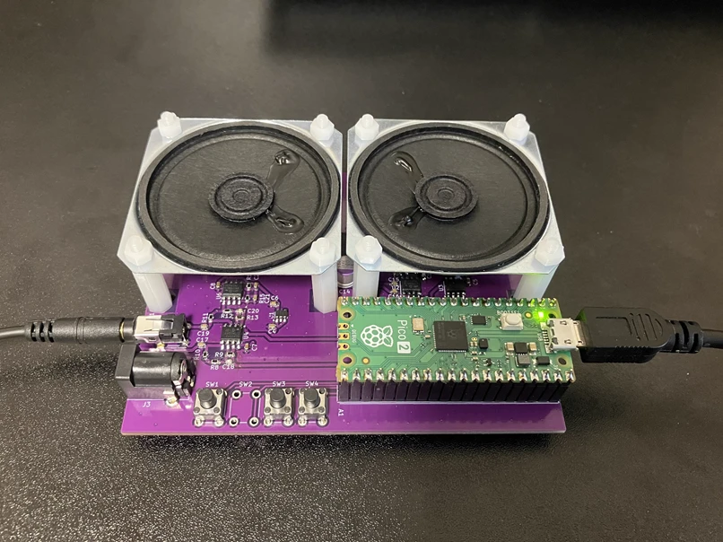
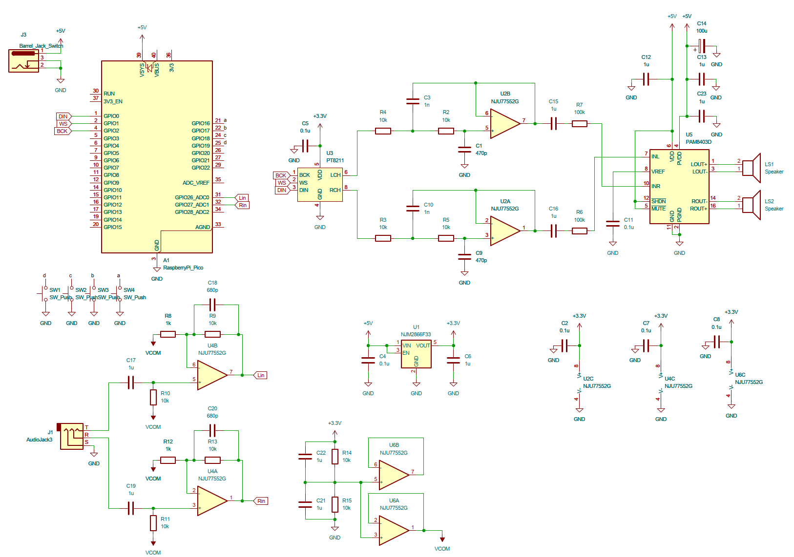
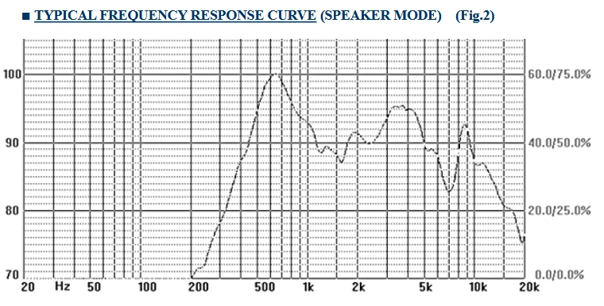

小型スピーカーの高音質化のためのDSP基板を作りました。Raspberry Pi Pico2で演算を行っています。

作成した基板
ミッシングファンダメンタルとは、ある音の基音 (最も低い周波数成分) が実際には存在しなくても、その上に乗る倍音列の間隔だけから脳が元の基音のピッチを補完して知覚してしまう現象です。たとえば100Hz・200Hz・300Hz…という倍音列があれば、たとえ100Hz自体が信号に含まれていなくても、脳は100Hzの音が鳴っているかのように感じます。
小型スピーカーは振動板が小さいため、低い周波数を十分な音圧で再生することが原理的に苦手ですが、その低音の倍音にあたる帯域なら比較的得意です。そこで低域信号から意図的に倍音を生成し、スピーカーが再生しやすい帯域に載せてやることで、物理的な低音再生能力を超えて「低音が鳴っている」という感覚を作り出せます。スマートフォンや小型・ポータブルなBluetoothスピーカーでは、筐体との共振やバスレフポートによる低域増強といった物理的な工夫と組み合わせる形で、この現象が広く利用されています。
このミッシングファンダメンタルによって低音を補強する実証をやってみたのが今回の制作です。
Raspberry Pi Pico2にDACのPT8211、D級アンプICのPAM8403を中心に、アナログ入出力ができる最低限の回路を作りました。入力はRaspberry Pi Pico2のADCを使用しています。DSPの効果を最大限楽しむため、とりあえず音が鳴ればよいという設計です。

回路図
マイコンはRaspberry Pi Pico2 (RP2350) を使用し、48kHzでの実時間処理をすべてfloat演算で行っています。入力はADCによるライン入力とUSB Audioの2系統を持ち、USBが有効な間はADC側のリングバッファを読み捨ててUSB側を優先する構成です。出力はPIOでLSBJフォーマットのビットストリームを生成し、DACのPT8211へ送っています。USB Audio側はフィードバックエンドポイントを意図的に無効化しており、ホストとPicoのクロックは完全には一致しません。そのドリフトはリングバッファの充填レベルを監視し、無音フレームを検出してドロップ/複製する (見つからなければバッチ全体への線形補間にフォールバックする) 非同期のサンプルレート補正で吸収しています。
ADC入力は12bit・2ch (GPIO26/27) をラウンドロビンで変換し、クロック分周を124に設定しています。RP2350のADCクロックは48MHz固定なので、L/R合計で48MHz/(124+1) = 384ksps、1chあたり192kspsとなります。これを割り込みの中で4サンプルずつ積算し、出力レートを192k/4 = 48kHzちょうどに間引いています。
まず原信号から40〜200Hzの帯域を抽出し、倍音生成の元にします。上下限周波数から中心周波数とQを求める単純な2次バンドパス1段だと、次の式のような設計 (40Hzと200Hzを代入すると\(f_0≈89.4\text{Hz}\)、\(Q≈0.56\)) になりますが、これは減衰が緩く (スカート約6dB/oct)、1kHzでもピークから-14dB程度しか落ちません。
$$f_0=\sqrt{f_{low}f_{high}},\qquad Q=\frac{f_0}{f_{high}-f_{low}}$$
この後段には振幅を大きく歪ませる非線形関数を置くため、これだとボーカルやギターなどの中域成分まで十分な音量で入り込み、混変調歪 (IMD) の原因になります。そこで抽出側は、40Hzの2次バターワースハイパスを2段、200Hzの2次バターワースローパスを2段カスケードした、計8極・4次 (LR4スタイル) のバンドパスにしています。この構成だと1kHzでの減衰は約-55dBまで改善し、中域の漏れ込みをほぼ無視できるレベルまで抑えられます。
抽出した低域信号 \(x\) から、奇数次・偶数次の倍音をそれぞれ別の非線形関数で生成し、混ぜています。
$$y_{odd}=\frac{d\,x}{\sqrt{1+(d\,x)^2}},\qquad y_{even}=\frac{(d\,x)^2}{1+(d\,x)^2}$$
$$y = (1-\alpha)\,y_{odd} + \alpha\,y_{even},\qquad \alpha=0.2$$
\(d\)はドライブ量 (ボリュームに応じて7〜10) です。\(y_{odd}\)は\(\tanh\)に近い滑らかな飽和関数で主に奇数次高調波を、\(y_{even}\)は\(x\)の符号によらず\(1\)に飽和する滑らかな全波整流に近い形で主に偶数次高調波を生みます。単純な\(|x|\)やハードクリップで倍音を作ると波形の折れ点で微分不連続が生じ、非常に高次の成分まで大きな振幅で残るため、48kHzのままだとナイキスト周波数付近で折り返してノイズっぽく聞こえやすくなります。この2つの関数はどちらも至る所で滑らかなので、高次に向かって振幅が急速に減衰し、折り返しノイズは低減されます。ただし48kHzのまま処理している以上、折り返し自体が完全になくなるわけではありません。より抑えるには倍音生成部だけオーバーサンプリングする必要があり、これは今後の課題です。
生成した倍音は400〜1000Hzのバンドパス (同じ式で\(f_0≈632\text{Hz}\)、\(Q≈1.05\)、こちらは単純な2次バンドパス1段) で帯域を絞り、スピーカーが得意とする帯域だけを残してから原音に加算しています。加算する原音側 (\(in\)) には、これとは別に60Hzのバターワースハイパス (Q=0.707) を通して不要な超低域を削り、スピーカーのストローク消費とIMD (混変調歪) の発生を抑えたものを使っています。倍音生成の元になる40〜200Hzバンドパスの抽出は、このハイパスを通す前の原信号に対して行っています。
$$out = in_{HP} + y_{bp} \cdot g_{harm}$$
倍音だけを単独で鳴らすのではなく、抽出前の低域成分を含む原音にそのまま上乗せしているのがポイントです。人間の聴覚は基音が無くても倍音列のピッチ間隔から元の基音を補完して知覚します (ミッシングファンダメンタル)。実際には元の低音自体も物理的に (減衰しつつ) 出ているので、そこに倍音を重ねることで、小型スピーカーが再生しにくい低音までまとまって「鳴っている」ように感じられます。
使用したスピーカーユニットは秋月電子通商のDXYD50N-22Z-8A-F (Changzhou E-sound Electronics製) です。このデータシートに掲載されている周波数特性 (Fig.2 TYPICAL FREQUENCY RESPONSE CURVE, SPEAKER MODE) を基に、これを平坦化する方向でピーキングEQを6段直列に入れています。実測ではなく、データシートのグラフを目視で読み取って合わせ込んでいます。

データシートより引用した周波数特性 (Fig.2)
550Hz付近の大きな盛り上がり、3〜4kHzにかけてのブロードな盛り上がり、7kHz付近の谷から8〜9kHzにかけての鋭いピーク、という特徴が読み取れます。3つの山 (speaker_eq1〜3) と1つの谷 (speaker_eq4) をそれぞれ打ち消す形でEQを設定しました。
| 段 | \(f_0\) | \(Q\) | ゲイン | 目的 |
|---|---|---|---|---|
| speaker_eq1 | 550Hz | 1.5 | −10dB | 強い中域共振の抑制 |
| speaker_eq2 | 3800Hz | 1.2 | −5dB | 上位中域のブロードな盛り上がりの抑制 |
| speaker_eq3 | 8500Hz | 2.0 | −4dB | 高域の鋭いピークの抑制 |
| speaker_eq4 | 7000Hz | 3.0 | +4dB | 7kHz付近の谷の補填 |
| acoustic_eq1 | 4300Hz | 2.0 | +3dB | 基板反射による打ち消し谷の補填 |
| acoustic_eq2 | 8600Hz | 2.0 | −5dB | 基板反射による強調ピークの抑制 |
このうちacoustic_eq1とacoustic_eq2の2段は、スピーカー裏に実装した基板面での反射由来のくし形フィルタ (コムフィルタ) を補正するものです。スピーカーからその裏の基板面までの距離を\(d≈2\text{cm}\)とすると、直接音と反射音の経路差はおよそ\(\Delta≈2d=4\text{cm}\)になります。経路差が半波長の奇数倍のとき逆位相で打ち消し合って谷に、波長の整数倍のとき同位相で強め合って山になります。基板が近距離にあることで、打ち消しと強め合いの両方が可聴帯域内に現れてしまっているため、両方とも補正の対象にしています。
$$f_{dip}=\frac{c}{2\Delta},\qquad f_{peak}=\frac{c}{\Delta}$$
音速\(c=343\text{m/s}\)、\(\Delta=4\text{cm}\)を代入すると\(f_{dip}≈4.29\text{kHz}\)、\(f_{peak}≈8.58\text{kHz}\)となり、これに基づいてacoustic_eq1を4300Hz (+3dB)、acoustic_eq2を8600Hz (−5dB) に設定し、谷を埋め、山を削っています。
ただし、反射によるディップは非最小位相な現象なのでEQで直せるのは振幅特性だけで位相までは補正できず、また打ち消し合う周波数は聴取角度によって動くため、この補正が効くのは基本的に正面軸上に限られます。根本的な対策としては基板をスピーカーから離す、あるいは反射面に吸音材を貼るほうが効果的で、このEQはあくまで次善策です。
ここまでの信号を和差 (M/S) に分解します。
$$M=\frac{L+R}{2},\qquad S=\frac{L-R}{2}$$
\(M\)はそのまま、\(S\)だけを1.5倍してから再合成することで、低音のパンチ感を保ったまま定位感だけを広げています。\(S\)を全帯域一律に持ち上げると、もともと\(S\)側に乗りやすい低音の逆相成分まで一緒に強調してしまう理屈にはなるのですが、実際に200Hz以上だけ1.5倍・未満は1.2倍に留めるハイシェルフ型と聴き比べたところ、フラットな1.5倍の方が低音の量感がはっきり良く、そちらを採用しています。
$$L'=M+1.5S,\qquad R'=M-1.5S$$
続いて簡易的なクロストークキャンセル (XTC) を掛けています。リングバッファに\(L'\), \(R'\)を書き込み、12サンプル前 (48kHzで0.25ms、両耳間時間差の典型的な範囲に収まる遅延) の対向チャンネルを0.1倍して差し引きます。また、頭部による周波数依存の減衰 (HRTF) は考慮しておらず単一タップの近似に留まるため、あくまで簡易的なクロストークキャンセルです。
$$L''[n]=L'[n]-0.1\,R'[n-12],\qquad R''[n]=R'[n]-0.1\,L'[n-12]$$
これら処理により近接配置の小型スピーカー2つによるニアフィールド再生でも、ある程度、定位感の確保と空間表現ができます。
最終段では、±0.5 (−6dBFS) までは完全に線形、そこから±1.5までは2次関数で滑らかに丸め、±1.5以上は±1.0に固定するソフトクリッパを掛けています。
$$ y= \begin{cases} x & |x|\le0.5\\[4pt] \mathrm{sign}(x)\left(0.5+d-0.5d^2\right),\ \ d=|x|-0.5 & 0.5<|x|<1.5\\[4pt] \mathrm{sign}(x) & |x|\ge1.5 \end{cases} $$
これにより通常のレベルでは無加工のまま、大きめのピークだけをデジタルクリップの耳障りな歪みではなく、滑らかな飽和感に変換しています。
また、16段階のボリューム (0〜1.0、約−3dBステップ) に応じて、倍音生成の強さも変えています。
$$g_{harm}=0.7+0.3(1-v),\qquad d=7+3(1-v)$$
\(v\)は0 (最小音量) 〜1 (最大音量) に正規化したボリューム位置です。人間の聴覚は音量が小さいほど低域に対する感度が下がる (等ラウドネス曲線) ため、音量を下げるほど倍音生成のドライブ量とミックスレベルを増やし、低音感が痩せて聞こえないよう補償しています。
今回はスイッチによりDSP処理のON/OFFを切り替えられるようにしてあります。OFFの時には見た目通り、おもちゃ的な音がしますが、ONにすることでフルレンジスピーカーのようなフラットかつ低音の迫力がある音になりました。
ただし、筐体や回路の特性による音への影響を完全に制御できているわけではないので、スマートフォンほどに良い音というわけでもありません。DSP処理の効果をはっきりと体感でき、かつこの見た目から出る音としては驚くことができるくらいの音です。